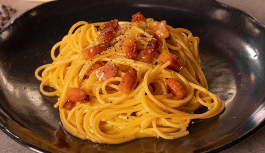

Carbonara
(A verdadeira não leva creme de leite)
Ingredientes:
- Spaghetti
- Ovo
- Queijo parmesão ou pecorino
- Bacon ou pancetta
- Pimenta-do-reino
Modo de preparo:
- Cozinhe o macarrão.
- Frite o bacon.
- Misture ovo + queijo ralado.
- Junte o macarrão quente com o bacon e desligue o fogo.
- Acrecente a mistura de ovo mexendo rápido para formar o molho cremoso.
